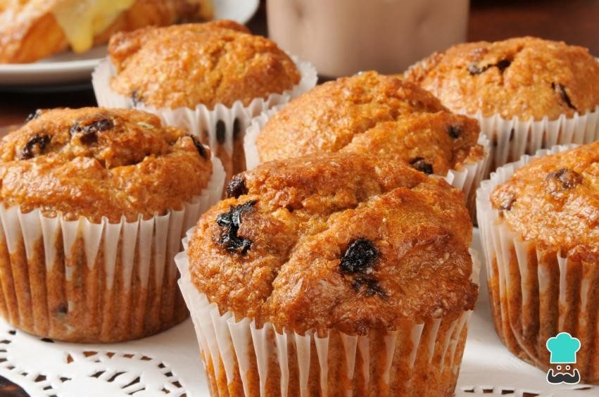

Doces · Tortas e bolos
Muffins

Ingredientes
- Manteiga para untar
- 1 xícara de farinha de trigo
- 1 xícara de farinha de trigo integral
- 1 colher (sopa) de açúcar
- ½ colher (chá) de sal
- 3 colheres (chá) de fermento em pó
- 1 ovo
- ¼ xícara de óleo
- 1 xícara de leite
- ½ xícara de passas brancas deixadas de molho em água morna e depois escorridas
Modo de preparo
- Preaqueça o forno em temperatura média (180 °C).
- Unte com manteiga 12 forminhas para muffins ou quindins.
- Apoie uma peneira na borda de uma tigela de tamanho médio. Peneire juntos as farinhas, o açúcar, o sal e o fermento.
- Numa jarra, coloque o ovo batido, junte o óleo e o leite e misture.
- Despeje os ingredientes líquidos e as passas na tigela onde está a farinha e, usando uma colher de pau, misture rapidamente, sem bater, só o necessário para umedecer um pouco os ingredientes (a massa deverá ficar empelotada e mal misturada).
- Distribua a massa pelas forminhas de muffins, preenchendo apenas ⅔ de cada forminha. Leve ao forno preaquecido e asse até ficarem dourados e crescidos (cerca de 25 minutos).
- Retire do forno e desenforme. Deixe esfriar e congele.
Observação
Se você não tiver fôrmas para muffins ou quindins em casa, use forminhas de empada com 7 cm de diâmetro, bem untadas com manteiga. Congelamento: coloque os muffins num recipiente rígido, próximos uns dos outros, preenchendo os espaços vazios com toalhas de papel; intercale cada camada de muffins também com toalhas de papel. Vede bem, etiquete e congele. Descongelamento: em temperatura ambiente por 1 hora e leve ao forno para aquecê-los. Sirva-os quentes, acompanhados de manteiga e geleia, na hora do lanche ou no café da manhã.